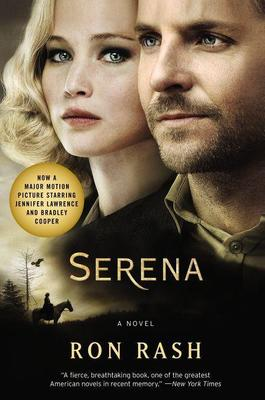
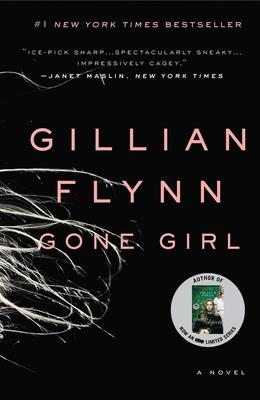

- Home
- Browse
Thriller Stories
Read the stories we love
And Then There were Noneby Agatha Christie
Ratings
Perhaps the best-known murder mystery of all time, And Then There Were None absolutely epitomizes suspense. Ten strangers meet on an isolated British isle at the behest of their oddly absent hosts. But when they start dying off one by one — in disturbing parallels to a children’s nursery rhyme — they realize that this is no vacation, but a collective execution.Baby teethby Zoje Stage
Ratings
This 2018 novel follows a dysfunctional family with a terror of a daughter (you might call her a bad seed). Hanna is seven years old and has never spoken, but that’s the least of her mother’s worries; you’d probably feel the same if your little girl were trying to kill you. Big Little Lies
Big Little Lies
by Liane Moriarty
Ratings
If all fiction is lies, Moriarty can still spin ‘em like no other — and her most prominent work, Big Little Lies, takes the concept to a whole new level. In this novel, an idyllic coastal town is sucked into sordid scandal involving a young mother’s traumatic past, another’s secret home life, and a kindergarten scuffle that gets way out of hand.The couple Next Doorby Shari Lapena
Ratings
Happy suburban couple Anne and Marco Conti seem to have a perfect life — but that illusion quickly shatters when their six-month-old daughter goes missing. With a detective hot on their heels and their neighbors’ suspicions increasing, Anne and Marco soon realize that they’re both hiding huge secrets… secrets that could mean the end of their marriage, or worse.Descentby Tim Johnston
Ratings
Another deceptively happy family features in this heart-pounding thriller. The Courtlands are vacationing in the Rocky Mountains right before their daughter Caitlin leaves for college. While the athletic children enjoy the fresh air and mountainous terrain, the parents try desperately to fix their marriage. The Dry
The Dry
by Jane Harper
Ratings
The Dry is an evocative portrait of a small farming community, Kiewarra, plagued by drought… and a recent triple homicide that seems to seal its doomed fate. Detective Aaron Falk returns home to Kiewarra for the funerals and is convinced to stay by the perpetrator’s mother — who believes her son is innocent.The Girl On The Tranby Paula Hawkins
Ratings
The suspense sensation of 2015, The Girl on the Train follows Rachel Watson, a woman who’s lost everything: her husband, her job, and arguably her mind. Rachel whiles away her days drinking on trains, romanticizing the lives of the picture-perfect suburbanites she passes — until one day she sees something shocking through her window. Gone Girlby Gillian Flynn
Ratings
Did you really think we’d write a list of the best suspense novels ever and not include Gone Girl? What starts off as a standard domestic thriller about unhappy couple Nick and Amy escalates into an unputdownable tale of love, duplicity, and media distortion. However, the masterful prose and revolutionary plot twists of this zeitgeist-defining novel can really only be appreciated firsthand.Intensityby Dean Koontz
Ratings
This pressure-cooker of a novel takes place over a single weekend, closely tracking the movements of college student Chyna Shepherd as she attempts to outwit sociopathic murderer Edgler Vess.Killing Floorby Lee Child
Ratings
This one’s a little more action-packed than most of the psychological-leaning thrillers on our list — so if you love Mission Impossible and Die Hard, you’ll find your literary fix with Lee Child. Killing Floor kicks off Child’s stellar Jack Reacher series, beginning with the titular Reacher getting arrested for a murder he didn’t commit (though that’s not to say he’s never killed before).